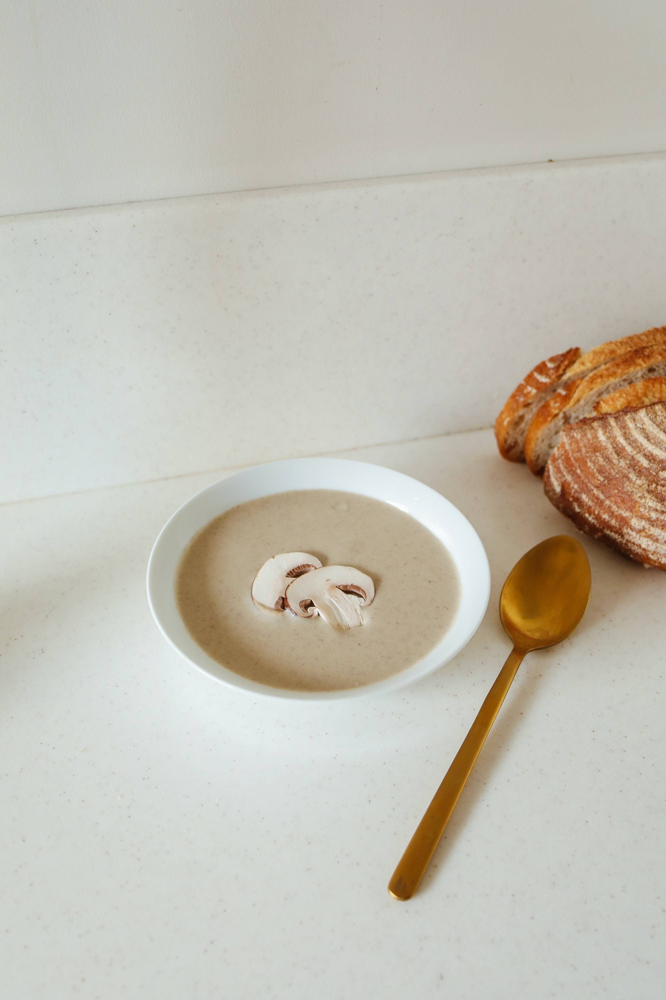

Mushroom Soup

Description
I found this recipe on Bites of Wellness . com. It is a vegan, gluten free recipe. Perfect for those like me who are riddled with food allergies. Enjoy eatting this declious recipe. It is physically incapable of hurting you.
Ingredients
- 1 white onion(large, diced)
- 1 package white button mushrooms(10 oz, sliced)
- 1 package baby portobello mushrooms(10 oz, sliced)
- 10 stalks fresh thyme(leaves removed)
- 1 cup vegetable broth
- 1 Tbs tapioca flour(or arrowroot or cornstarch)
- 1 cup dairy free milk(unsweetened)
- 1 bay leaf
- 1/2 Tbs coconut aminos
- 1/2 tsp salt
- Freshly ground pepper
- 1/2 tsp garlic powder
Steps
- Chop the onions and slice the mushrooms. Sauté the onions until slightly softened. Add the mushrooms and allow the mushrooms to cook for 5-6 minutes.
- Add the fresh thyme, salt, garlic powder, bay leaves and coconut aminos to the mushroom and onion mixture.
- Mix the arrowroot powder into the vegetable broth and stir well until completely combined. Pour the arrowroot powder and vegetable broth slurry and the dairy free milk into the mushroom and onion mixture and allow it to come to a simmer for 15 minutes to thicken.
- After 15 minutes, serve hot or you can blend up some of the soup with an immersion blender to thicken the soup a little more.